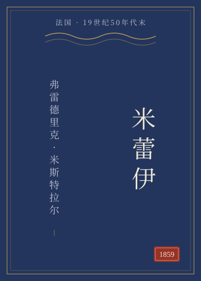

米蕾伊
一、基本信息
| 作者 | 弗雷德里克·米斯特拉尔 |
|---|---|
| 成书/出版 | 1859年（Britannica B362：Mirèio (1859)——'his claim to greatness rests on his first and last long poems'） Frederic Mistral — Encyclopaedia Britannica（百科全书） |
| 国别/地区 | 法国 |
| 时代 | 近代 · 19世纪50年代末 |
| 体裁 | 长篇叙事诗（12歌） |
| 语言 | 奥克语（普罗旺斯语） |
《米蕾伊》乡土史诗图（主题·结构图）
二、创作背景
Britannica（B362）：Mirèio——富农场主之女爱上穷编篮匠之子，被父母阻挠——'ends with her death in the Church of Les Saintes-Maries-de-la-Mer'。
Britannica（B362）：'skillfully combines narration, dialogue, description, and lyricism'——'springy, musical quality of its highly individual stanzaic form'。
Britannica（B362）：以法文题《Mireille》启发了古诺的歌剧（1863）。
三、内容脉络
米蕾伊与樊尚的爱情受阻（B362：love...thwarted by her parents；人名通说待核）。
圣马利海岸教堂的朝圣与死亡（B362：ends with her death in the Church of Les Saintes-Maries-de-la-Mer）。
四、主要人物表
| 人物 | 身份 | 说明 |
|---|---|---|
| 米蕾伊 | 农场主之女 | （B362 书名人物） |
| 樊尚 | 编篮匠之子 | （B362：a poor basketmaker's son——名通说待核） |
五、主题与艺术特点
- 乡土史诗（B362：set in the poet's own time and district）。
- 爱情与门第（B362：thwarted by her parents）。
- 普罗旺斯风物的百科（B362：poured his love for the countryside）。
六、影响与评论
- Britannica：古诺歌剧 Mireille (1863)（B362）。
Frederic Mistral — Encyclopaedia Britannica（百科全书） - Britannica：1904诺奖（B362 交叉）。
Frederic Mistral — Encyclopaedia Britannica（百科全书）
七、阅读建议
难点
- 奥克语文本（读译本）。
- 普罗旺斯民俗与圣马利朝圣。
- 《米蕾伊》中译名（《米瑞伊》）待核。
- 奥克语原版（公有领域）。
米斯特拉尔首选；与《罗讷河之歌》对读。
八、待核实
- 人名（米蕾伊/樊尚——樊尚说待核）核对。
- 1859年出版细节待核。
- 12歌结构核对（B362：full-scale epics in 12 cantos）。